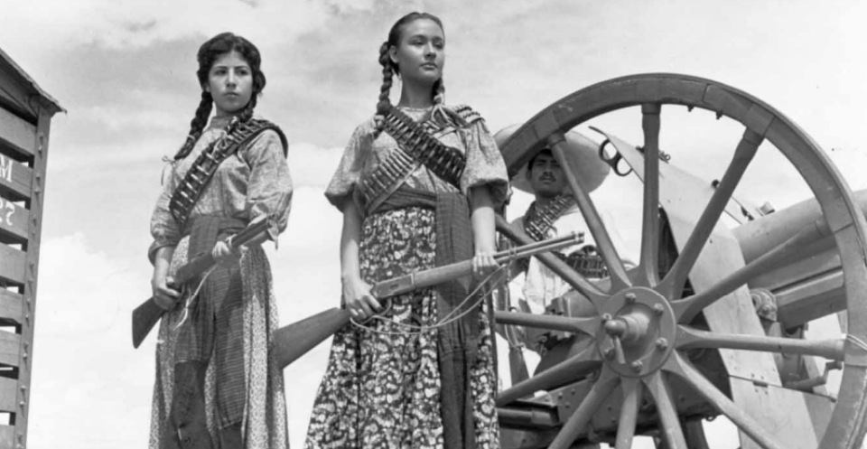

La Revolución Mexicana impulsó una mayor participación política de las mujeres. En 1911, Dolores Jiménez y Muro redactó el Plan Revolucionario de Tacubaya y destacó como una de las principales líderes revolucionarias. Muchas mujeres participaron en clubes políticos, movimientos antirreeleccionistas y actividades revolucionarias.
En 1915 se aprobó la Ley del Divorcio promovida por Venustiano Carranza, otorgando a las mujeres mayores posibilidades de independencia jurídica. Un año después se celebró en Mérida el Primer Congreso Feminista, donde se discutieron temas como la igualdad intelectual entre hombres y mujeres, la educación femenina y la participación en cargos públicos.
Aunque en el Congreso Constituyente de 1917 se debatió el sufragio femenino, la propuesta fue rechazada por considerar que las mujeres aún no estaban suficientemente integradas a la vida política nacional.
